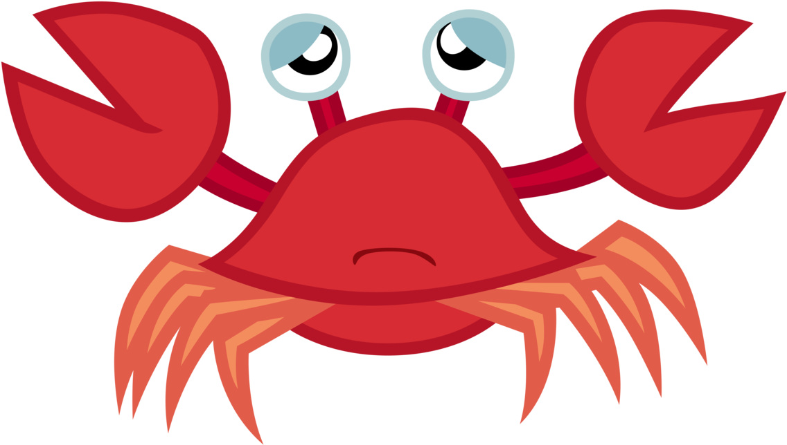
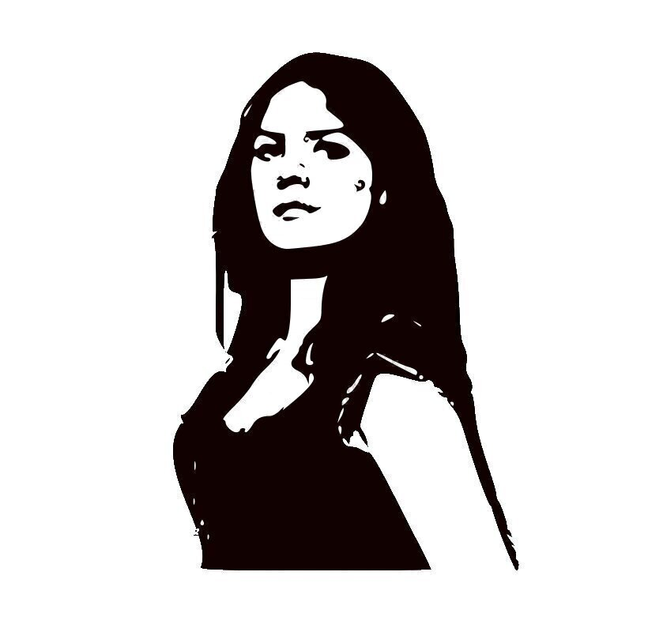
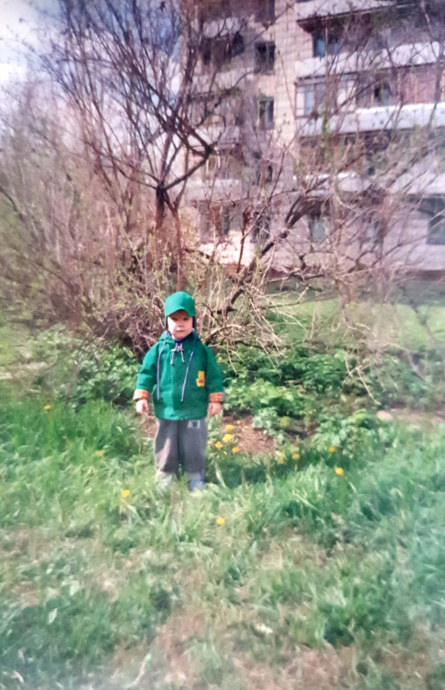
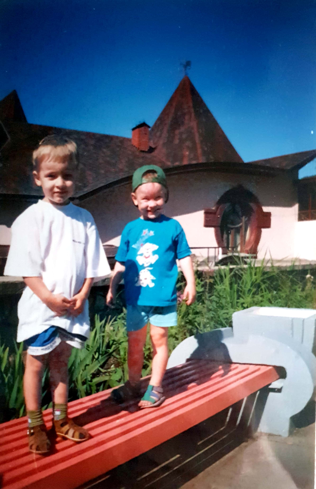
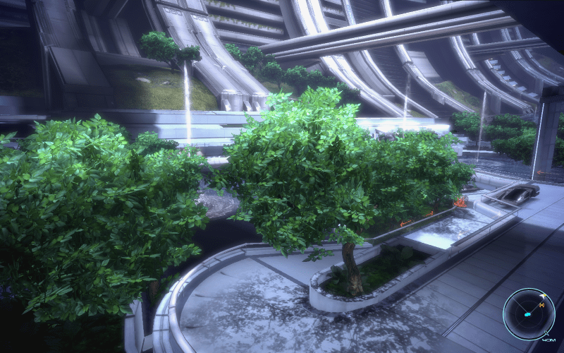
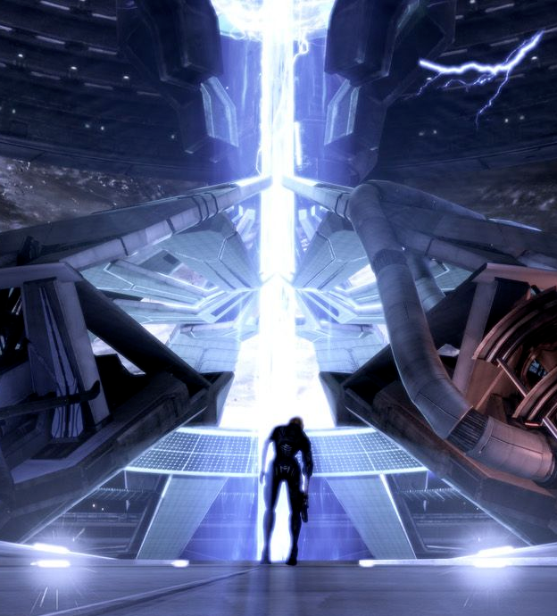
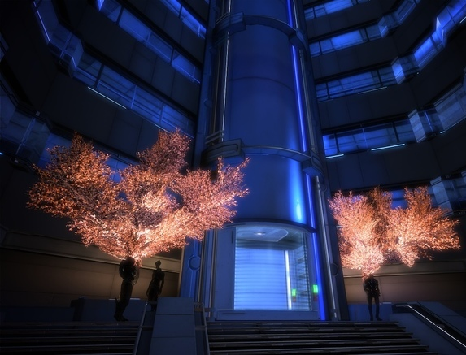
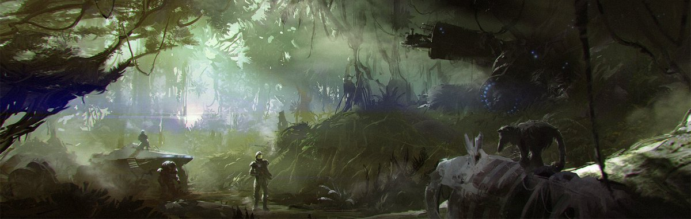
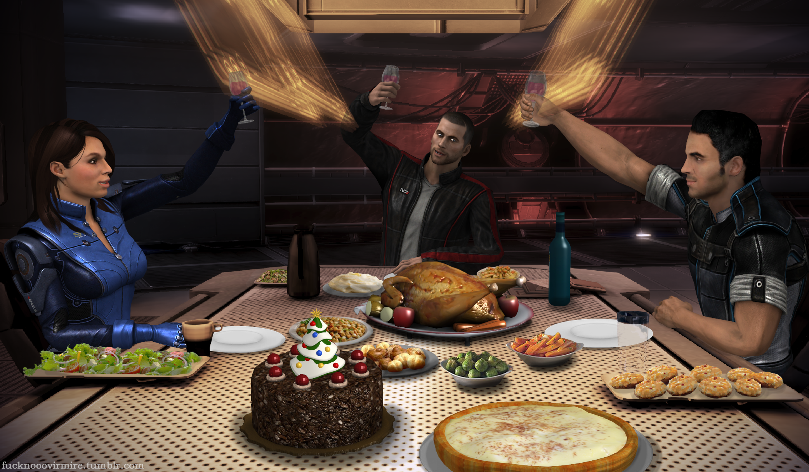
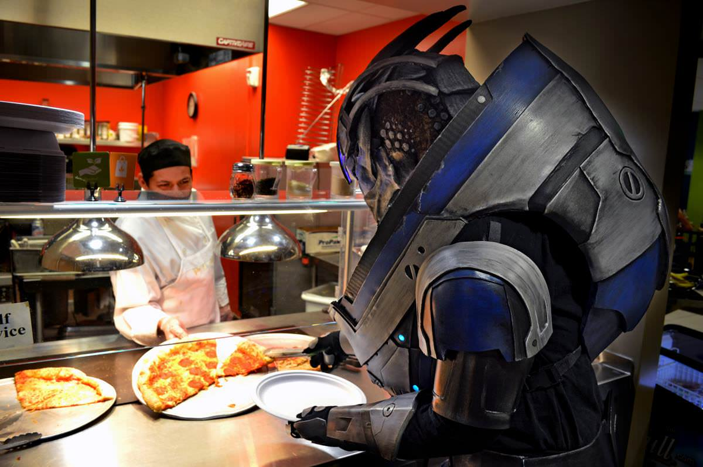

Во первых, желаю тебе здоровья, счастья, радости, и чтоб Зенька и Яшунька послушными были! Желаю успеха с бизнессами, и люблю тебя очень сильно!
Год назад, ты зделала мне подарок который помог мне в этом году как ничто другое. Я говорю, конечно, о закрытой коробке конвертов.

Когда было грустно
Конверт давал мне чувство, что ты со мной.

Когда не было мотивации
Конверт помогал мне находить силу двигаться вперед.
Когда была бессонница
Твои слова помогали мне успокоиться.
Когда день был трудным
Ты помогла мне смотреть и думать о будущем.
Я знаю, это было очень сентиментально. Давай оживим атмосферу сейчас! В конце концов, это же твой день рождения! Вот несколько фотографий давней давности - я думаю тебе они понравятся.


Воспоминания
Я помню недавно ты спросила меня о моих воспоминания из детства. Вот еще несколько историй!
1
Помнишь то место в Москве, где у вас бизнес связанный с гейшами был? До сих пор иногда вспоминаю как ты мне иногда разрешала шоколадки из кассы брать :)
2
А как насчет того времени, когда мы собирались кого-то навестить, но остановились на базаре? Ты тогда купила мне собачку-робота (с батарейками!), а я даже не просил. Просто так, тебе хотелось меня порадовать.
3
А это было недавно - как ты со мной поехала в Австралию чтобы помочь мне привыкнуть к новой стране. Я очень благодарен за это. Не справился бы без твоей поддержки. <3
Окей! Теперь главный аттракцион - конверты.
Конверты
Ты уже знаешь, что с ними делать. Не открывай их сразу - жди правильного момента и возвращайся сюда. Сайт никуда не денетса :)
Грустно

Грустно, а? Ты конечно уже знаешь, но иногда грустить - это быть человеком. Иногда приходят дни когда мы просто не контроллируем свои емоции. Я помню, ты мне всегда говорила принимать душ когда грустно, и мне это всегда помогало. Не грусти! <3
Одиноко

Иногда, несмотря на то, что нас окружают любящие нас люди, мы можем чувствовать себя одинокими. Знай, что я всегда с тобой, где бы ты ни была и чем бы ни занималась. Хочешь созвониться? Поболтаем :)
Скучаешь
Когда я писал это, я сначала хотел настроить так, чтобы, когда ты открыла этот конверт, я автоматически получил бы уведомление. Таким образом, я знал бы когда тебе нужен звонок, и сам бы тебе позвонил. В конце концов я решил этого не делать, потому что я сам хорошо знаю что иногда хочется просто быть на едине. Я всегда с тобой, мам, и у меня все хорошо. Звони если настроение есть, а если нет, это тоже без проблем. Люблю тебя!
Нет мотивации

Иногда первый шаг - самый тежелый. Сделай его! Философ Лаоцзы один раз сказал, "путешествие в тысячу миль начинается с одного шага". Не бойся неудач. Самый большой проигравший всегда тот, кто даже не пытался.
Нужна поддержка
Вухуууу! Гоу гоу гоу! Гоу мама!! Ха, шучу, шучу. Я верю в тебя, и несмотря ни на что, я уверен что ты справишься. Неважно чем ты в этот раз решила заняться.
Волнуешься

Один метод который мне иногда помогает идет примерно вот так: подумай, насколько повлияет эта штука на твоё будущее. Важно ли это будет через 10 дней? 10 месяцев? 10 лет? Поставь все в перспективу, и успокойся! А если это правдо что-то очень важное, делай все возможное и отдыхай спокойно.
Что поесть? (обед)

Окей! Скажи мне если ссылки не будут работать, вручную тебе их отправлю :) 1 2 3 4 5 6
Что поесть? (ужин)

Держи! Скажи мне если ссылки не будут работать, вручную тебе их отправлю :) 1 2 3 4 5
Заключение!
Я надеюсь, что тебе понравился мой подарок. Я дерьмовый веб-дизайнер, плюс у меня нет Русской клавиатуры, поэтому на создание этого сайта у меня ушел почти месяц! Очень надеюсь что ты не открыла все конверты сразу. На самом деле, было бы здорово если конверты вообще до конца жизни не понадобились. Но если они тебе будут нужны, ты знаешь где их найти. Я очень благодарен тебе и Виссаму за всё, что вы для меня делаете. Спасибо вам.
Люблю тебя, и поздравлаю еще раз с Днем Рождения!!